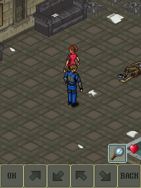

Uprising’s loop kept an old timestamp instead of refreshing it, so its delay fell to the minimum. We found a useful place to pace it in what looked like an ordinary logging line.UP01
The loop boundary.
The existing curLoop print call marked each iteration. The adapter used that boundary for pacing without patching the guest bytecode. It was functional scheduling behavior, not an invitation to flood the diagnostic log during play.UP01UP02

Claire and Leon in the original room, with the native 40-pixel touch strip retained. Historical 240×320 desktop original-guest frame; not the phone recording.
Open the image for the full original view.
UP90The original also had a nonstandard left-key value and a forty-pixel touch strip. Preserving the game’s controls meant following those actual inputs and pixels rather than replacing the lower strip with an assumed viewport crop.UP03
Inventory was missing from the panel.
The later phone evidence had original gameplay and inventory use, but our panel was missing Inventory 0 and description-scroll actions 7 and 9. We exposed them in both 0.1.2 control modes. The original host regression could open and close inventory through 0; its short item list still left long-description scrolling for another check.UP04UP05UP06
We kept the original save restrictions, including refusing to save during dialogue. Later, an Omni report failed during preparation and asked for the original download again. That gave us a different problem to track, before the game loop was even running.UP07UP08
About these records
The pacing and inventory records describe their stated earlier builds. Phone feedback, host action regressions and a later Omni PREPARATION_FAILED export remain distinct. The later preparation failure is not resolved by this report. The image is historical original Java guest output, and a short inventory fixture does not establish description scrolling.
The receipts
Selected source lines, investigation notes and recorded feedback. Open a receipt for the original context and scope.
UP01 / The original loop timestamp and functional log boundaryCheckpoint investigation notes
Source: Uprising_Bridge_v0.1.2_PRIVATE_CHECKPOINT.zip / Uprising_Bridge_v0.1.2_PRIVATE/TECHNICAL_HANDOFF.txt · selected lines 103–117
FRAME SCHEDULING / BACKGROUND The original t.run() sets a timestamp once before the loop and subtracts that same timestamp from its 33 ms sleep budget forever. Consequently its sleep reaches the original 5 ms minimum even while idle on a fast host. Platform.pace() enforces the original intended ~30 Hz budget without spin waiting. Original methods, timers and movement logic remain untouched. The original loop emits a unique curLoop: line each iteration. A private PrintStream hook uses that existing boundary for pacing and foreground scheduling while dropping repetitive loop spam. This is functional code; do not remove it as cosmetic logging cleanup. Other original log lines and stderr are retained in bounded diagnostics. Android backgrounding calls the original MIDlet pause at this boundary and parks the worker on a condition; foregrounding resumes the original MIDlet. No thread suspension or polling spin is used. The host harness verifies native MIDlet pause/resume; Android foreground parking still needs device testing.
UP02 / Historical pacing check and original guest executionHistorical original-guest host verification
Source: Uprising_Bridge_v0.1.2_PRIVATE_CHECKPOINT.zip / Uprising_Bridge_v0.1.2_PRIVATE/evidence/baseline-v0.1.0/VERIFICATION.txt · selected lines 13–22, 36–46
PASSED — ORIGINAL EXECUTION ON HOST Runs the actual supplied ResidentEvilMIDlet and game classes with the common MIDP compatibility layer, using an AWT backend for headless rendering. Original English selection, sound prompt, Capcom/Glu startup and title menu. Original opening text, Claire's station map and introduction to Leon. Original map movement with all four bridge directional inputs. Original pause menu, inventory, search/knife entries and item exchange. Native MIDlet pause stops frame output; native resume restores it. The main acceptance session reached 17,594 original frames without a recorded compatibility error. This is host evidence, not Android evidence. [... selected excerpt ...] PASSED — GRAPHICS / SCHEDULING All eight MIDP drawRegion transforms passed pixel comparisons. Clipping and surface pixel semantics passed. The approximately 30 Hz scheduler passed its timing check (30 intervals in 1.024 seconds) without busy waiting. PASSED — ORIGINAL MIDI PARSING / REQUESTS Original title (11056 bytes), intro (13301 bytes) and gameplay (3477 bytes) MIDI streams parsed successfully and exercised player completion callbacks. Android MediaPlayer output is implemented; host MIDI parsing does not prove audible playback on Samsung.
UP90 / Historical image / Resident Evil: UprisingHistorical host capture
Source: Uprising_Bridge_v0.1.2_PRIVATE/evidence/acceptance/30_walk_left.png
Retained historical host output. Original emulator chrome, where present, is part of the unchanged source image. No phone capture or phone performance is inferred.
Unchanged historical image. Source member: Uprising_Bridge_v0.1.2_PRIVATE/evidence/acceptance/30_walk_left.png SHA-256: a810f950856d3939e65b43c5e35263f25a2b38317b49a5f21f40661d31fb0bcc Claire and Leon in the original room, with the native 40-pixel touch strip retained. Historical 240×320 desktop original-guest frame; not the phone recording. Scope: Historical original JAR execution with AWT graphics backend, retained from original acceptance.
UP03 / A nonstandard left key and an original touch stripCheckpoint investigation notes
Source: Uprising_Bridge_v0.1.2_PRIVATE_CHECKPOINT.zip / Uprising_Bridge_v0.1.2_PRIVATE/TECHNICAL_HANDOFF.txt · selected lines 75–101
EXECUTION The unchanged original JAR is converted with D8 together with a targeted MIDP compatibility layer. ResidentEvilMIDlet, t and all other original classes execute directly. No game logic is decompiled/recreated and no original class bytes are patched. All 123 non-class original resources are packaged byte-for-byte at the APK classpath root, with the original manifest also retained as game-manifest.mf for MIDlet properties. The compatibility layer implements the actual API set referenced by this JAR: Canvas, Display, Displayable, Image, Graphics, MIDlet, Manager, Player/PlayerListener and RecordStore. Graphics includes all eight MIDP region transforms, original PNG alpha, clipping, primitive drawing and pixel-preserving scaling. The game uses its own sprite font for most text. The virtual original device is 240x320. Its game field is 240x280 plus the native 40-pixel touch strip. The original touch strip is intentionally preserved as part of original execution. Native pointer input is supported. INPUT The JAR's t.a(int) maps raw -3 to an alternate '*' input before consulting getGameAction. Do not change the external left button to conventional -3. Verified native mappings are Up=-1, Down=-2, Left=2, Right=-4, OK=-5. Glu-Left-Key-Code=-6, Glu-Right-Key-Code=-7, Glu-Back-Key-Code=-8, Glu-Center-Key-Code=-5. Thus external Back=-7 reaches the game's own back handler. Number keys send their actual ASCII values. Numeric 5 is distinct from the separate OK input. Input events are queued and consumed at most one per original render, preserving quick press/release ordering. Cancel, panel swaps and app backgrounding release/clear pending touch state.
UP04 / Phone recording exposes missing inventory and text actionsCheckpoint investigation notes
Source: Uprising_Bridge_v0.1.2_PRIVATE_CHECKPOINT.zip / Uprising_Bridge_v0.1.2_PRIVATE/TECHNICAL_HANDOFF.txt · selected lines 5–29
CUSTOM CONTROL COMPLETENESS — v0.1.2 / 2026-10-19 The v0.1.1 phone recording exposed missing direct Inventory input in custom mode. UprisingControls.normal now defines five actions: BACK / PAUSE (-7), INVENTORY / 0 (48), ACTION / OK (-5), TEXT UP / 7 (55) and TEXT DOWN / 9 (57). The two text buttons scroll descriptions in inventory and item exchange. These mappings are documented by the original l.class help fields eN=0, eO=7 and eP=9. Native t.a(int) remains untouched. All help sections were reviewed: movement and OK/Back cover search, combat, target and aim modes; 0 plus 7/9 supply the additional inventory/exchange actions. The actual unchanged kit arranges Back/Pause above Inventory on the left, four-way sliding D-pad in the center, and the larger Action above the two text-scroll buttons on the right. Keypad mode retains all five action buttons and the separate original D-pad, with the numeric cluster. Compact keypad actions now use two rows; normal mode reserves the same taller slot, so the same renderer retains its dimensions and parent when switching modes. Run tests/run_android_ui.py for six production Activity tests, including the regression that finds and touches all three missing actions in BOTH modes. In keypad mode, releasing a labeled action while its duplicate digit is held must not release the original key. Switching modes clears held touch input. The existing tests also cover startup/insets, movement, native pointers, Android Back/cleanup, independent report export and startup faults. See current VERIFICATION.txt. Previous v0.1.1 handoff and verification are retained under evidence/baseline-v0.1.1.
UP05 / Original inventory opens and closes in the host regressionHistorical original-guest host regression
Source: Uprising_Bridge_v0.1.2_PRIVATE_CHECKPOINT.zip / Uprising_Bridge_v0.1.2_PRIVATE/evidence/control-regression-v0.1.2/RESULTS.txt · selected lines 1–10
Original unchanged game.jar executed with the existing shared MIDP layer and AWT host backend. Loaded the existing original save through Pause > Load; retained bo=2 and bg=14. Closed the original pause menu, sent literal original 0 (48), and observed the real Inventory screen. 12_direct_inventory.png / .txt: aL=2, aN=130, bo=2, bg=14. Sent original 7 (55) and 9 (57) in inventory without error, then 0 (48) again. 15_inventory_closed.png / .txt: aL=2, aN=384, bo=2, bg=14. Assertions bo=2 and bg=14 passed before normal original MIDlet destruction. This item list did not display a long description, so a visible scroll transition is not claimed. 7/9 function meanings are grounded in the original l.class help, not inferred from this fixture. This is original game execution on a host, not Android device verification.
UP06 / The current control changes keep their physical-phone scopeCheckpoint investigation notes
Source: Uprising_Bridge_v0.1.2_PRIVATE_CHECKPOINT.zip / Uprising_Bridge_v0.1.2_PRIVATE/VERIFICATION.txt · selected lines 62–76
ORIGINAL GAME SHORTCUT — PASSED ON HOST The actual unchanged JAR loaded the existing original save through its own Pause > Load flow. After closing Pause, original 0 opened Inventory (aN=130) and a second 0 closed it to gameplay (aN=384). Existing save state bo=2 and bg=14 remained intact; original guest reported no error. Screens and states are retained under evidence/control-regression-v0.1.2. 7 and 9 were also delivered without error; the selected inventory fixture had no long item description, so a visible scroll transition is not claimed. Their meanings are documented by original help in the retained control audit. DEVICE SCOPE The user's supplied v0.1.1 phone recording establishes real original gameplay and original keypad Inventory input on the phone. The new v0.1.2 buttons and their thumb comfort still need a phone run. No new physical-device, speaker, full-game or phone Downloads validation is claimed.
UP07 / Original save/load retains its restrictionsHistorical original-guest save regression
Source: Uprising_Bridge_v0.1.2_PRIVATE_CHECKPOINT.zip / Uprising_Bridge_v0.1.2_PRIVATE/evidence/baseline-v0.1.0/VERIFICATION.txt · selected lines 24–34
PASSED — SAVES The original pause-menu Save operation wrote the original game's records. A new JVM then started a fresh game session, used the original Pause > Load path and displayed the original "Game load complete" confirmation. Persisted plot flag bo=2 and room bg=14 were restored. Saved camera position 1821/1032 resumed at 1824/1030. Exact states and screenshots are preserved in evidence/reload-final and evidence/reload-acceptance.json. The game correctly refused saving during an earlier dialogue sequence; that restriction was left intact. Independent RMS checks passed a fresh-JVM byte-exact reload and 300 unchanged setRecord calls without additional disk writes.
UP08 / Later Omni export reports preparation failure before gameplayPhone Omni preparation report
Source: Uprising_report_20261022_165652_301.txt · selected lines 15, 26, 37
Thu Oct 22 16:56:37 CDT 2026 | PREPARATION_FAILED | Load the original Uprising download again to finish this update. Your existing game and saves are kept. [... selected excerpt ...] Thu Oct 22 16:54:59 CDT 2026 | PREPARATION_FAILED | Load the original Uprising download again to finish this update. Your existing game and saves are kept. [... selected excerpt ...] Thu Oct 22 16:54:52 CDT 2026 | PREPARATION_FAILED | Load the original Uprising download again to finish this update. Your existing game and saves are kept.